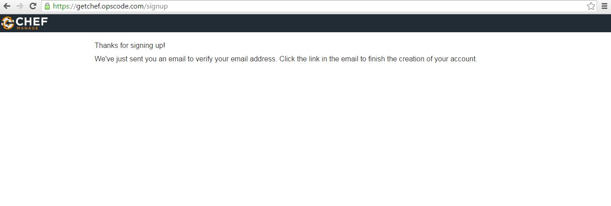
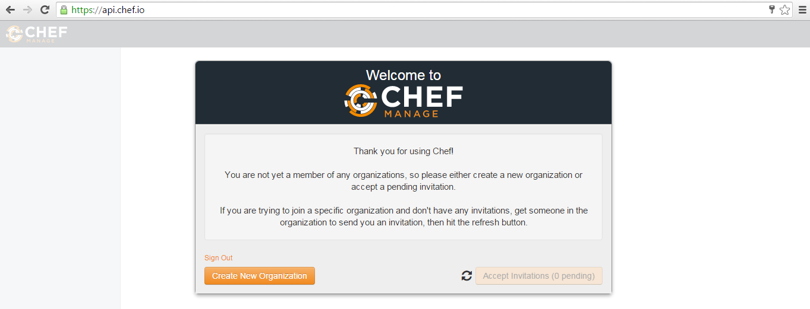
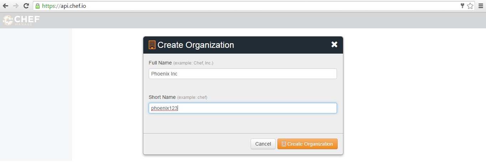
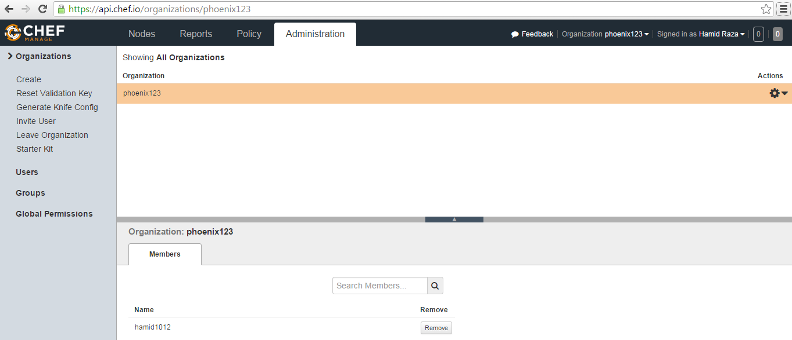
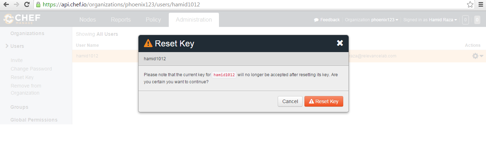
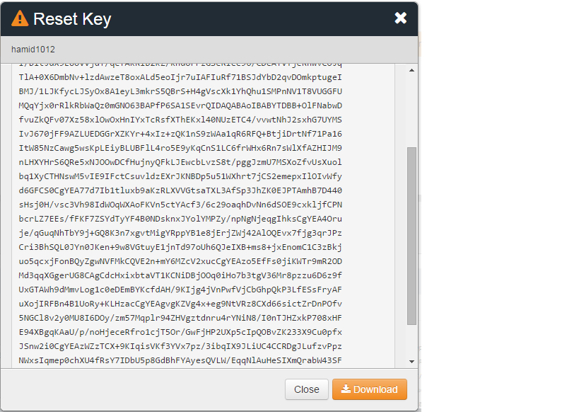
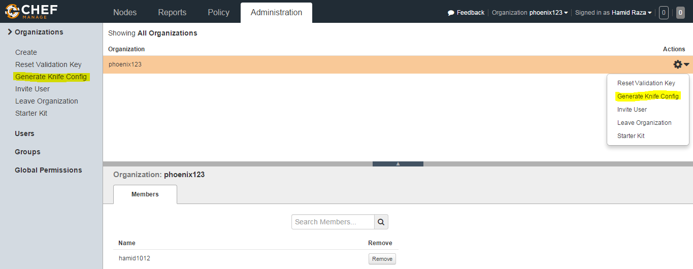

Working With Chef¶
Chef helps you express your infrastructure policy – how your software is delivered and maintained on your servers – as code. When infrastructure is code, it becomes more maintainable, versionable, testable, and collaborative.It allows you to install, configure and manage the packages required by your application without the complication of any client and server configuration. RL Catalyst allows you to use either chef or puppet configuration management to manage your Infrastructure.
To begin with you need to create your organization and an account in chef server to automate your infrastructure.
- Go to the below link and create an account in Chef
https://getchef.opscode.com/signup

- Once you provide the details you will get the below message and email in your mailbox

- Check the email and go to the link provided in the email and provide the password

- Once you provided the password, you will get the below message

- Create an Organization

Done Now you have a Hosted Chef account.
- Goto The Administrator Tab

- Reset the Validation Key


Download the key in your desktop
- Reset the User key
 
Download the key
- Generate the Knife Configuration

So Now you have the user key, organization key and knife configuration
- Install Chef-Client on your desktop (Windows or Linux)
https://downloads.chef.io/chef-client/
- Create a folder in any location and then under that create chef-repo . Create a folder chef(windows) or .chef(linux)
The directory structure will be:

Put all the files in the chef folder
- To check the connectivity from your workstation to the hosted chef server
Just run any command

Upload cookbooks into Chef¶
Once you setup Chef, the automation libraries need to be uploaded into Chef account. RL automation libraries are available at https://github.com/RLOpenCatalyst/automationlibrary.git
- clone the git repository to above directory
git clone https://github.com/RLOpenCatalyst/automationlibrary.git
- Run the ruby program (cookbooks_upload_chef_server.rb) available in the git repo.
ruby cookbooks_upload_chef_server.rb
It will upload all the cookbooks to the hosted chef server along with the dependencies.